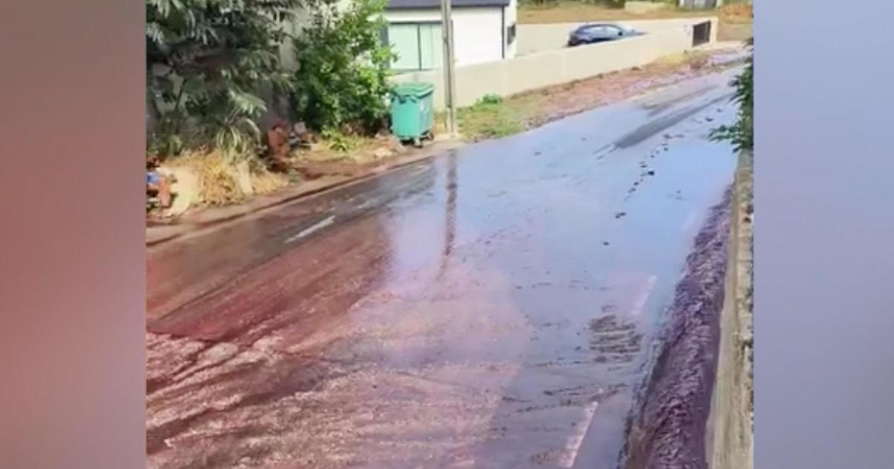

River of red wine flows through Portuguese village after storage units burstA river of red wine flowed through the streets of a small town in Portugal this week after an incident at a local distillery. Video from Anadia, Portugal, shows the wine rushing in the gutters and turning the streets purple. Destilaria Levira, a wine distillery located in the village of São Lourenço do Bairro, said the wine river was caused when two storage units holding wine burst on Sunday. In a post on Facebook, the distillery said no one was injured and the cause of the incident is being investigated. The distillery is offering to pay for any damage caused by the wine and asked people in the village to take photographic records of the damage they experienced. In another post on Monday, the distillery thanked the Anadia Municipal Council, firefighters and other local agencies for helping to minimize the impact of the wine. The wine storage units at the distillery were part of a government plan to help with the over-production of wine, the distillery said. The European Union said earlier this year that the wine sector has been hit by "reduced consumption," due to inflation. So, many winemakers have seen an accumulation of product and members of the EU can now participate in a program that will help remove the excess. Production of wine in the EU increased by 4% this year, but there has been a drop in wine consumption for many countries – including a 34% drop in Portugal. Exports of wine from the EU also dipped 8.5% between January and April 2023, compared to the previous year, the EU said. CBS News has reached out to the distillery and local government and is awaiting response. for more features. |
 |